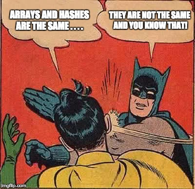

So we are all entering into the wonderful world of Ruby. Currently, I am struggling over constructing my own methods just because I used to love the simplicity of writing puts and magically creating a statement! I'm half-kidding though. When code works, it is a remarkable feeling because you feel as if you leveled up. Before I diverge off into what sounds like a cultural post, I will stop myself. There will be separate post about how DBC has been going. Stay tuned for that! Let's move on to our topic with brackets, the amazing and fantastic array!
I'm being corny only because arrays are actually pretty great. Array are essentially lists. That's it and it doesn't get much harder than that. Everyone has written an array at some point. For example, who has not written out the good old fashioned shopping list? Oh! How about the "To-Do-List" for the procrastinator in all of us? Those lists would look like"
Arrays covers the same idea, but places it into brackets. Therefore, an array for my example list would look like the following:
List_To_Do= [Crest, Floss, Dog_Park, Procrastinate]Of course, you can put numbers and the lovely booleans in there as well. In a nut shell, an array is a way for the programmer to set a single variable equal to a whole lot of values. Sure, you are thinking that this could help reduce programmer clutter and you would be correct. However, it also allows the programmer to use methods for arrays to cut down on inefficiency as well. Instead of going through each value at a time with the same exact code block, why can't you just apply it to an entire array at once! These are called iterators because you go through each element in the array and apply your designated code. It's handy. It's fantastic. You must have it!
Before Twitters and blogs, there was programming hashing. Remember my long-drawn-out example about the shopping list? Well, hashes are more detailed than that and it's even...a little more personal. *coughs*
I mentioned arrays and how methods can iterate over every single element/value between the brackets. However, those values or elements also don't bear any connection with each other. In my array example above, procrastinate would not be connected readily with crest. These items keep to themselves and don't want to get involves with the rest of the array.
Well, the hash is a type of list that builds connections between what you decide to put into the list. You are the one that builds these connections or pairs. This is called the key-value pair relationship!
There are two examples of modern day hashes that highlight this perfectly. First, restaurant menus are hashes because the owner is pairing a dish (key) with a dish (value). Second, one should consider the phone book. If you just had a book of names or a book of numbers, the physical yellow pages would be a waste of...oh sorry we live with the INTERNET now. That was just mean on my part. Ahem. The phone book is pairing a name (key) with phone number (value) in a list. This is vastly different than an array which would be the names or the phone numbers. If we wanted to get technical, it could even be the names and the numbers, but they wouldn't have the relationship that you would want to pair together. So let's make an example hash:
our_to_do_list = {:teeth=> "crest", :gums=> "floss", :pet=>dog, :real_life=> procrastinate }As you can see, we are using curly brackets and this list is similar to the array above, but we are adding associations. In Ruby, this is handy because you probably would need to construct dictionaries, phone-books, or some sort of data list. Like an array, you can call methods on them as well. So we can also look for selective pairs, look for the key using the value, or even look for the value using the pair. It's super handy!
So, this is my casual look at arrays and hashes! Feel free to comment on twitter about this topic. Remember, the hash in twitter is not the same as the hash in ruby!